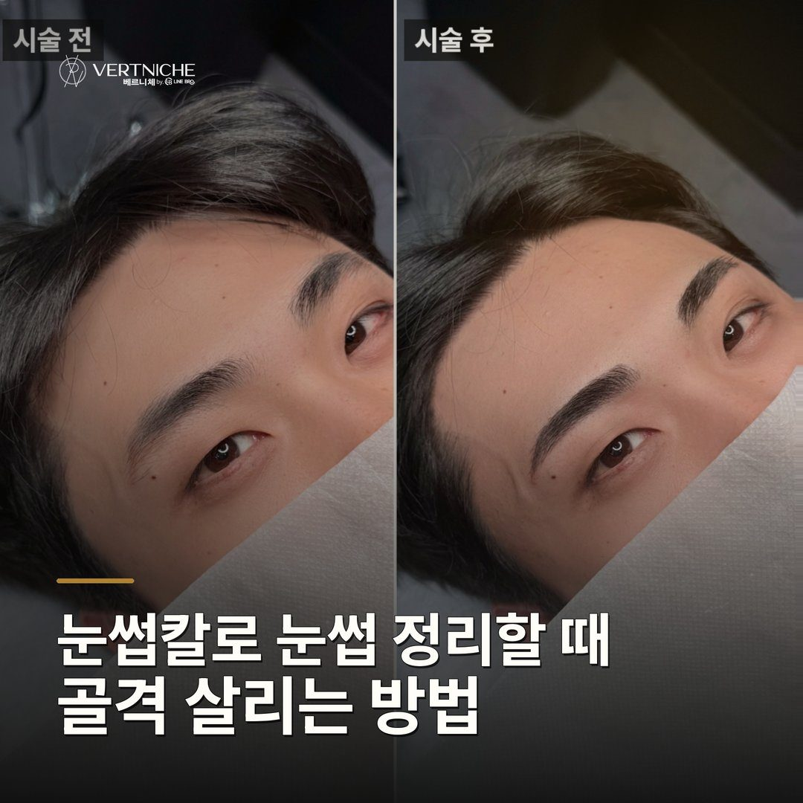
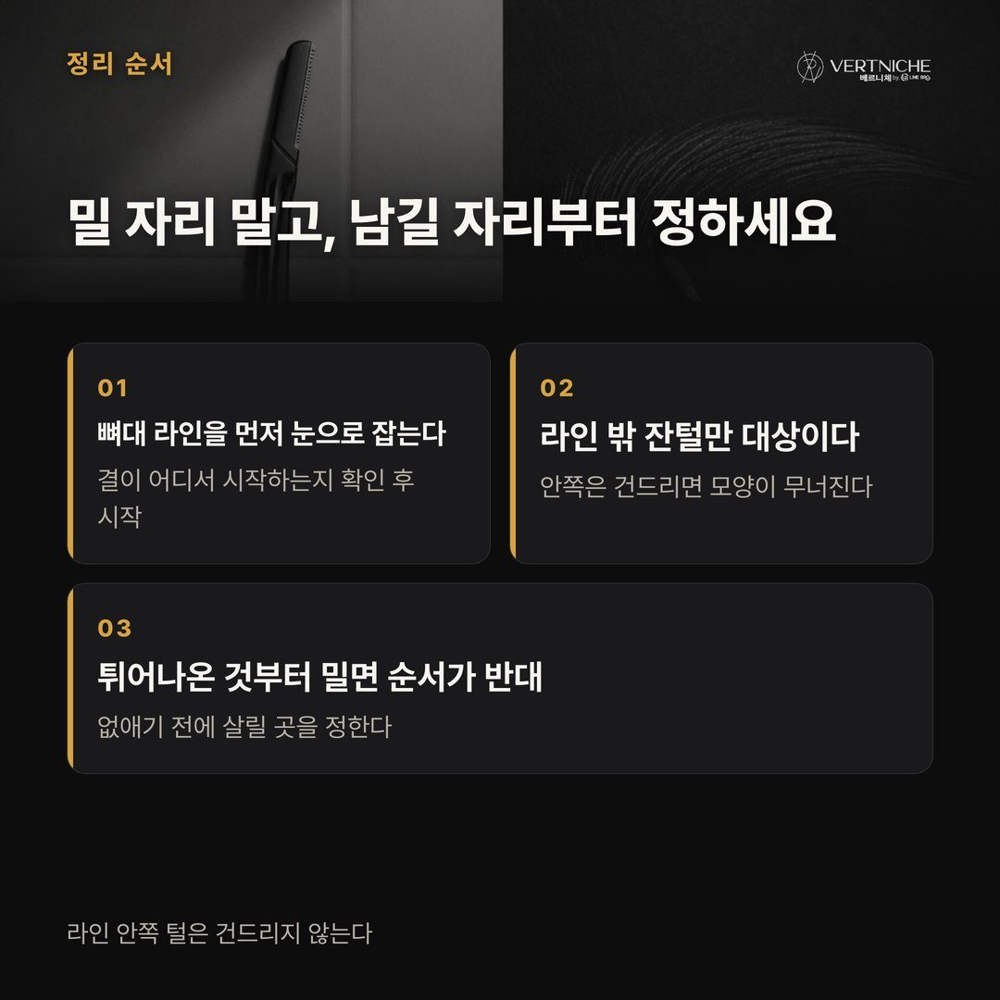
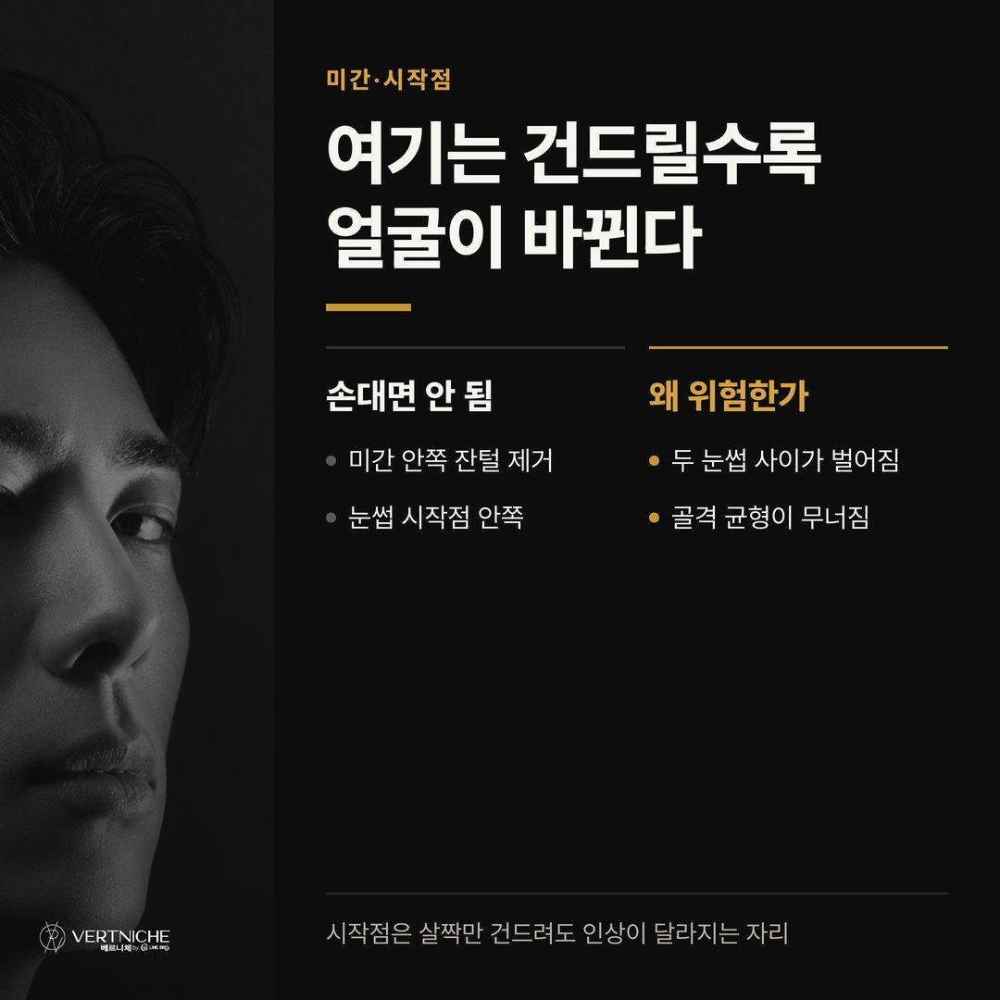
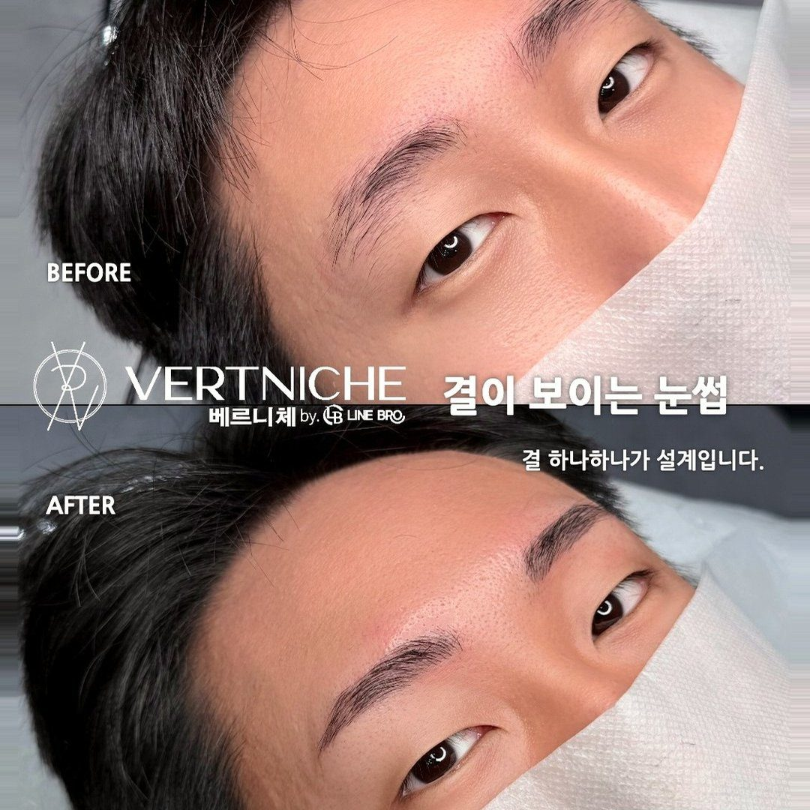
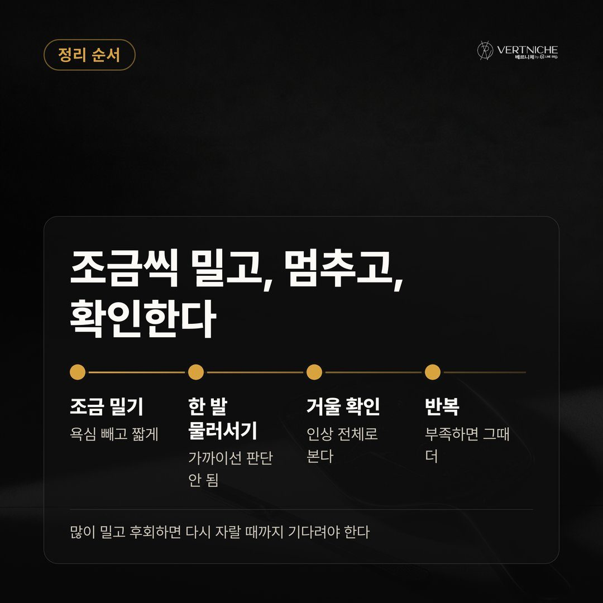
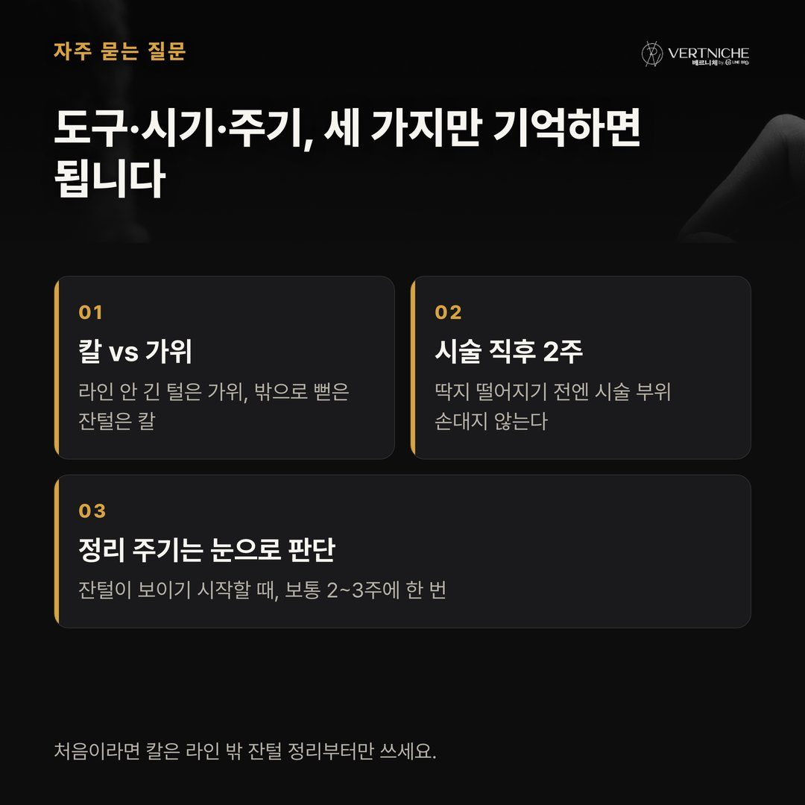
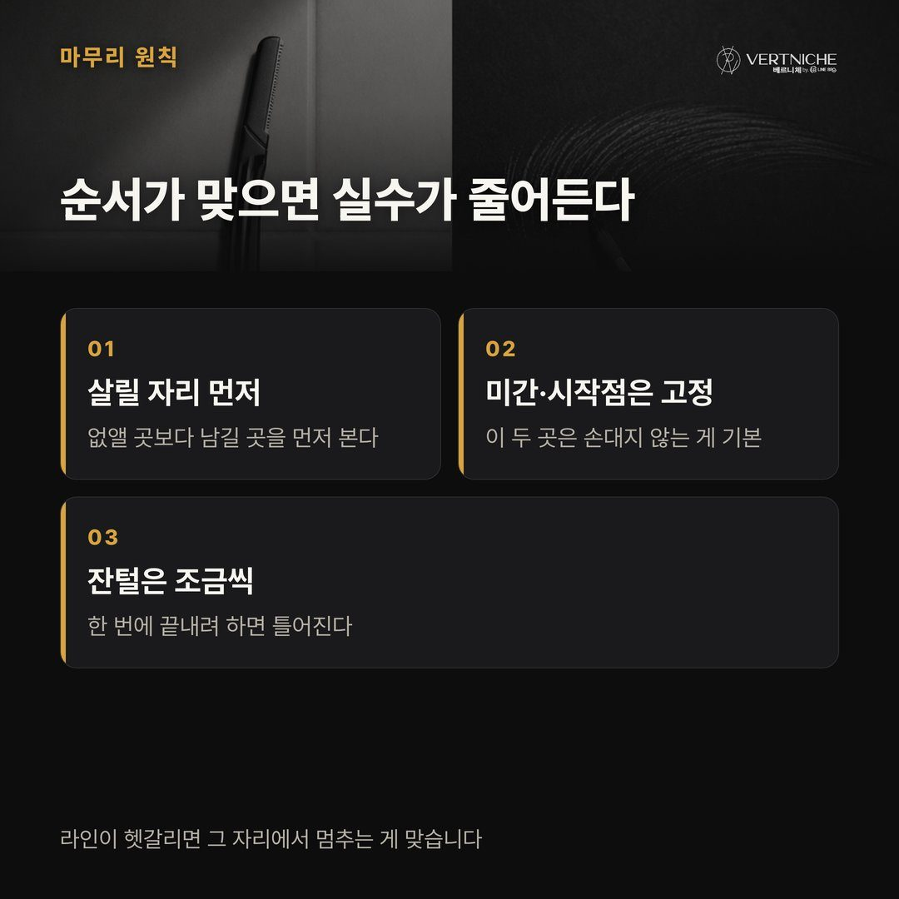
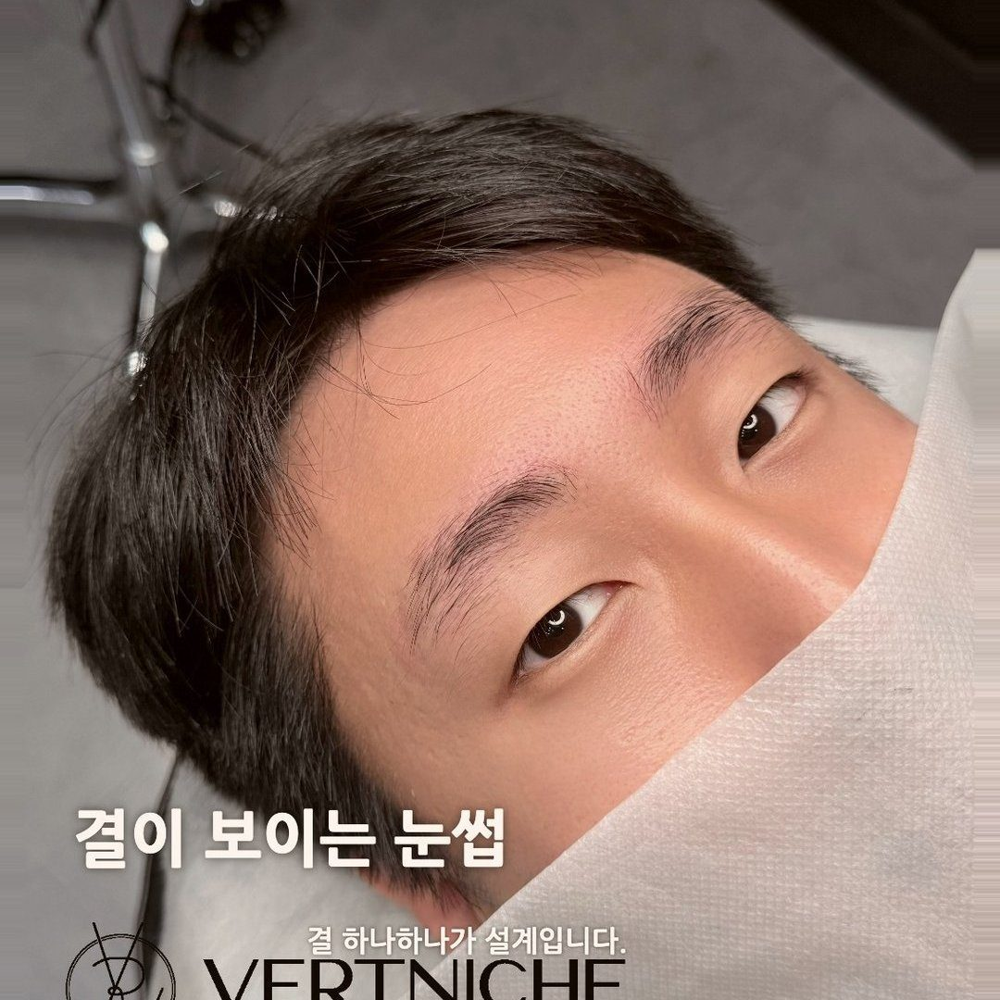
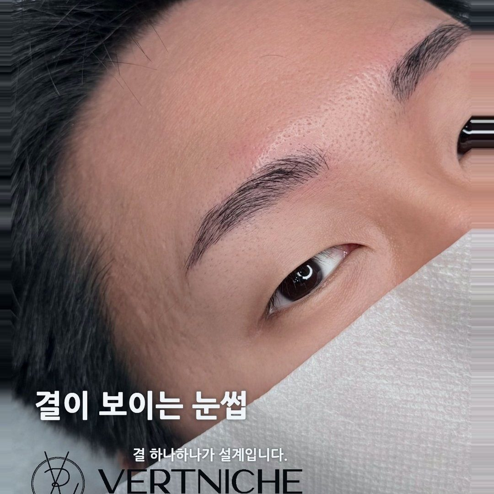
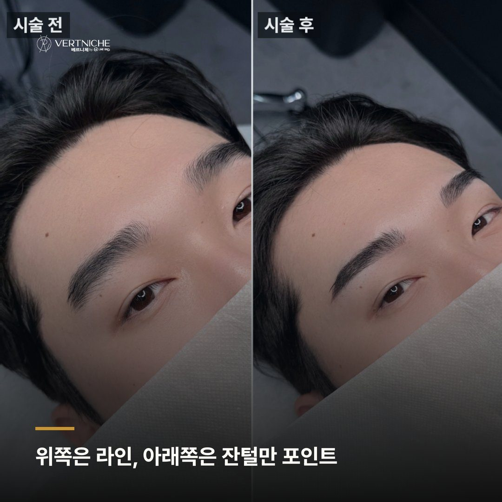

대구 남자눈썹, 눈썹 정리 전에 눈썹칼 쓰는 방법 알아보기

시술 끝나고 관리법 설명드릴 때, 남성분들한테 꼭 드리는 말이 있어요. 라인 밖으로 자란 잔털은 스스로 정리하셔야 모양이 유지된다고요. 그럼 거의 다 이렇게 물어보시거든요. "그냥 삐져나온 거 밀면 되죠?"
밀면 되긴 해요. 근데 어디를 미느냐가 문제죠. 7년 동안 5,500명 넘게 케어하면서 보니까, 자가 정리로 눈썹이 무너지는 건 손재주 문제가 아니라 순서 문제였거든요. 이 글은 그 순서를 정리한 거예요.
살릴 자리부터 정하고, 밀 자리는 그다음이에요
거울 보다가 삐져나온 털이 눈에 띄면 바로 밀어버리시는 분 많은데, 이게 순서가 거꾸로예요. 밀 자리를 찾기 전에 남길 자리를 먼저 눈으로 잡아야 해요.
눈썹은 있는 결을 살리는 게 먼저지, 튀어나온 걸 없애는 게 먼저가 아니거든요. 지금 눈썹에서 뼈대가 되는 라인이 어디인지, 그 안에서 어떤 결을 살릴지부터 확인하세요. 라인 안쪽 털은 건드리면 안 되고, 밖으로 확실하게 벗어난 잔털만 대상이에요. 이 순서만 지켜도 자가 정리로 눈썹 망치는 일은 거의 없어집니다.
미간이랑 시작점은 살짝만 건드려도 티가 나요
미간 쪽 잔털이 지저분해 보인다고 안쪽까지 밀어 들어가시는 분들이 있어요. 이러면 두 눈썹 사이가 넓어지면서 얼굴 인상 자체가 달라지거든요.
미간 넓이는 얼굴 골격에서 눈썹 위치를 정하는 기준이에요. 여기를 건드리면 골격에 맞춰 잡아둔 균형이 그냥 무너져요. 미간이 원래 넓은 분은 특히 조심하셔야 하는데, 좁혀야 할 자리를 오히려 더 벌리는 셈이 되거든요. 코 라인에서 올라오는 눈썹 안쪽 끝, 그러니까 시작점은 웬만하면 그대로 두는 게 맞아요. 여기는 정말 살짝만 건드려도 인상이 바뀌는 자리예요.
위쪽은 라인을 따라, 아래쪽은 잔털만 정돈
정리할 때 위아래를 다르게 봐야 해요. 눈썹 위쪽은 라인이 살아야 하는 곳이라, 명확하게 벗어난 털만 라인을 따라 정리하면 돼요. 라인 자체를 새로 만들려고 위로 밀어 올리면 각도가 그냥 무너지거든요.
아래쪽은 조금 달라요. 눈두덩 쪽으로 지저분하게 자란 잔털은 정리해도 부담 없는 편이에요. 다만 두께를 얇게 줄이겠다고 위로 밀어 올리는 건 피하세요. 얇아진 눈썹은 다시 채우는 데 시간이 꽤 걸리거든요. 잘못 밀면 그 자리 기다리는 게 생각보다 길어요.
조금씩 밀고, 한 발 물러서 확인하는 게 맞아요
눈썹칼은 한 번에 훅 밀어버리기 쉬운 도구예요. 그래서 조금 밀고, 거울에서 한 발 떨어져 확인하고, 다시 조금 미는 식으로 가야 해요. 가까이서 보면 다 지저분해 보이는데, 실제 인상은 조금 떨어져서 봐야 판단이 되거든요.
처음 스스로 정리하시는 분이라면 욕심을 빼세요. 오늘 덜 밀면 며칠 뒤에 또 밀면 되지만, 많이 밀면 다시 자랄 때까지 어색한 채로 기다려야 해요. 매일 거울 보는 본인이 결을 제일 잘 아니까, 순서만 지키면 스스로 관리하는 게 생각보다 어렵지 않아요. 정리하다 라인이 헷갈리면 시술 때 잡아드린 흐름 기준으로 보시면 되고, 그래도 애매하면 편하게 물어봐 주세요.
자주 물어보시는 것들
Q. 눈썹칼이랑 눈썹가위 중에 뭐가 나아요? 밖으로 벗어난 잔털을 밀 때는 눈썹칼이 편하고, 라인 안쪽에서 유독 긴 털 길이만 줄일 때는 가위가 안전해요. 라인 안쪽은 밀어서 없애는 게 아니라 길이만 다듬는 거거든요. 처음이라면 밖으로 벗어난 털만 칼로 정리하는 것부터 시작하는 게 맞아요.
Q. 시술받은 지 얼마 안 됐는데 자가 정리해도 되나요? 딱지 다 떨어지고 색이 자리 잡을 때까지는 시술 부위 건드리지 마세요. 최소 2주는 봐야 해요. 그 전에 칼이 지나가면 색이 고르게 안 남을 수 있거든요. 라인 밖 잔털 정리는 회복 다 되고 나서 시작하는 게 맞아요.
Q. 얼마나 자주 정리해야 하나요? 사람마다 털 자라는 속도가 달라서 딱 정해진 주기는 없어요. 라인 밖으로 잔털이 눈에 띄기 시작하면 그때 정리하시면 되는데, 보통 2~3주에 한 번 정도예요. 한 번에 많이 밀기보다 조금씩 자주 정리하는 게 모양 유지에 낫거든요.
포스팅 요약
• 밀 자리가 아니라 남길 자리를 먼저 정하고, 라인 밖 잔털만 건드리는 게 순서예요
• 미간과 눈썹 시작점은 살짝만 건드려도 인상이 바뀌니 웬만하면 두세요
• 조금씩 밀고 한 발 물러서 확인하는 습관이 자가 정리에서 제일 중요해요
궁금하거나 라인이 애매하면 편하게 문의해 주세요. 대구 남자눈썹 베르니체예요.
눈썹정리하는 법 영상으로 알아보기
첫인상은 눈썹에서 시작된다? 대구 남자 눈썹샵 고르는 방법
베르니체 대구남자눈썹 대구여자눈썹 대구눈썹 눈썹시술후 관리법
더 보기 / 상담
남자관리 사례랑 눈썹문신 결과는 인스타에 계속 올리고 있어요. 시술 사진이랑 관리 팁은 아래 링크에서 더 보실 수 있습니다.
시술 사진









이 글은 네이버 블로그에도 같은 내용으로 올라가 있습니다.